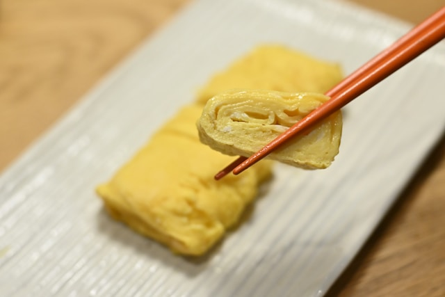

Recipe Index
Tamagoyaki

Description
Tamagoyaki is a Japanese-style omelette that is usually made in a square pan and is rolled on itself. Depending on the recipe,
tamagoyaki can be either on the savory or sweet side. When it's cut, the servings are very convenient to eat with chopsticks
and add to bentos. For authenticity, you will need a square tamagoyaki pan.
Ingredients:
- 3 large eggs
- 1 teaspoon soy sauce
- 1 teaspoon sugar
- some oil to grease the pan
Special items:
- tamagoyaki pan
- container that makes pouring convenient
- chopsticks
Instructions:
- Combine all the ingredients into a large enough bowl.
- Using chopsticks, first cut rather than mix the ingredients together so that you avoid incorporating air.
- Gently mix while still avoiding adding unnecessary air bubbles to mixture.
- Once your egg mixture is as homogeneous as you like it, transfer to pourable container.
- Grease and heat your tamagoyaki pan over medium heat.
- Check for correct heat by putting a drop of water in pan. The water droplet should immediately start sizzling.
- Pour a thin layer of the egg mixture into pan, moving the pan around to cover the bottom.
- Get rid of any bubbles while cooking.
- Once your first layer is set (not runny but not fully cooked), roll the the omelette towards the pan handle.
- Push rolled omelette to the side opposite the handle. Grease pan.
- Again, pour in a thin layer of eggs, making sure some goes underneath roll, and wait for them to set.
- Repeat steps 7-11 until you've used up your egg mixture.
- Transfer to serving dish and cut into 1-inch slices. Enjoy!